: with zero bias (photovoltaic mode) the open-circuit voltage is logarithmic in power, with reverse bias
: with zero bias (photovoltaic mode) the open-circuit voltage is logarithmic in power, with reverse bias  through
through  is linear until it approaches
is linear until it approaches  , diffusion from undepleted regions, and the circuit
, diffusion from undepleted regions, and the circuit  , with rise time
, with rise time  penalty.
penalty.
Equivalent circuit
A current source
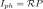
in parallel with the ideal diode, the junction capacitance (falls with reverse bias as
(falls with reverse bias as  grows), a large shunt resistance
grows), a large shunt resistance  (leakage), and a small series resistance
(leakage), and a small series resistance  ; the load or amplifier input follows. Bandwidth
; the load or amplifier input follows. Bandwidth 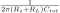
, with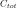
including the amplifier input and parasitics.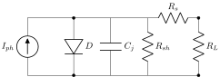
 , shunt resistance , series resistance and load
, shunt resistance , series resistance and load  .
.Operating modes and load line
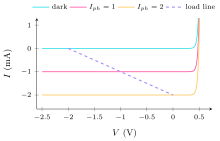
The third quadrant (
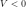
,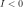
) is the photoconductive mode: the curves are flat, current proportional to power, low capacitance, fast; the load line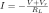
(here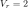
V,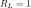
kΩ) crosses each curve at the operating point. The fourth quadrant (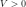
, ) is the photovoltaic mode: power is delivered (a solar cell), no dark current noise at zero bias, open-circuit voltage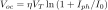
, logarithmic: good for wide dynamic range light meters, poor for linear detection.Speed (derivation of the rise time)
A single-pole system with time constant  answers a step with
answers a step with
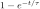
; from 10% to 90% takes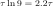
, and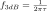
, so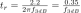
. Independent limits add roughly in quadrature: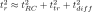
. Carriers generated outside the depletion region must diffuse,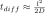
(µs over tens of µm): the slow tail of pn diodes, removed in pin diodes by absorbing inside the i-layer. By the Shockley–Ramo theorem the external current flows while the carriers move, not when they arrive.Transimpedance amplifier
An op-amp with feedback resistor  holds the diode at virtual ground:
holds the diode at virtual ground:
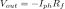
. The diode capacitance sees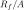
instead of, so the bandwidth is 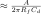
(in practice limited by the op-amp gain-bandwidth to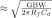
); the thermal noise is that of, 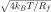
per √Hz (1.3 pA/√Hz for 10 kΩ) (noise).Worked examples
- RC limit:
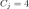
pF,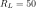
Ω: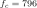
MHz,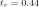
ns; with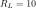
kΩ (200× more signal voltage):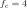
MHz,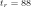
ns. - Transit: i-layer
 µm, saturated drift
µm, saturated drift 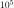
m/s: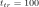
ps,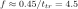
GHz. - TIA:
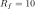
kΩ,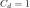
pF: plain resistor bandwidth 16 MHz; with loop gain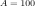
the input pole moves to 1.6 GHz (amplifier permitting). - Photovoltaic mode:
 nA, µA:
nA, µA: 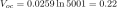
V; ten times more light adds only 60 mV.
Engineering applications
Fibre-optic receivers (pin + TIA, ROSA modules), light meters and solar irradiance sensors (photovoltaic mode), LiDAR front ends, optical power meters (zero bias for low noise), pulse and rise-time measurements.
Exam-style exercise
A Si pin ( A/W at 850 nm,
A/W at 850 nm,
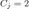
pF at 5 V reverse bias) is read across kΩ with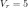
V. (a) Output for 10 µW. (b) Bandwidth and rise time. (c) Largest power before the diode leaves the linear region. (d) A 1 GHz bandwidth is required: what? What do you lose and how do you recover it?
Solution
(a) µA → 5 mV. (b)
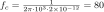
MHz,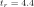
ns. (c) The diode must stay reverse biased: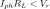
→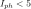
mA →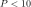
mW. (d) Ω; the signal falls to 0.4 mV and thermal noise rises as : use a TIA with of a few kΩ.
: use a TIA with of a few kΩ.
Pitfall
The "bandwidth" of a photodiode on a datasheet is measured with 50 Ω; the same diode on a 10 kΩ load is hundreds of times slower. Always recompute  with the real load and amplifier capacitance.
with the real load and amplifier capacitance.